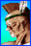
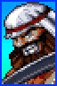

Rila Estansia
History
Rila Estansia is a free-spirited Brazilian from the Amazon. A nature protector, she joins the FIST Tournament to uncover the evil spirit threatening her people.
Rila's alt, Virgo Sandra, was orphaned and raised by a giant snake in the "forest tribe".
Gameplay
Rila is a charge character with high damage output. Even though she’s slow and lacks zoning tools, her strong anti-air and big damage make her really good in close and mid-range fights
Move list
| Commands | |
|---|---|
| Dynamite Kick |
 + + |
| Specials | |
| Killer Snake |
  + + |
| Spinning Claw |
  |
| Quick Scratch |
 + + |
| Wild Saver |
 + + |
| Supers | |
| Shine Beast |
+ |
| Bloody Fang |
 + + |
Colors
 |
 |
 |
|
 |
 |
 |
 |
Move Properties
| Normals | Guard | Properties |
|---|---|---|
| far A | Mid | |
| close A | Mid | |
| down A | Mid | |
| up A | High | |
| ub/uf A | High | |
| far B | Mid | |
| close B | Mid | |
| down B | Low | |
| up B | High | |
| ub/uf B | High | |
| far C | Mid | |
| close C | Mid | |
| down C | Mid | |
| up C | High | |
| ub/uf C | High | |
| far D | Mid | |
| close D | Mid | |
| down D | Low | |
| up D | High | |
| ub/uf D | High | |
| Commands | Guard | Properties |
| Dynamite Kick | Mid | Corner only |
| Specials | Guard | Properties |
| Killer Snake | Mid |
Launcher for Super Bloody fang
D. version only
|
| Spinning Claw | Mid |
Launcher for Super Bloody fang
|
| Quick Scratch | Mid | C. version only |
| Wild Saver | Mid | |
| Supers | Guard | Properties |
| Shine Beast | Mid | |
| Bloody Fang | Mid |
Frame Data
N/A
Neutral
cr.HP :
This move is really frustrating for opponents. It’s hard to punish and safe on block, making it great for shutting down approaches.
Use it smartly, as it has few recovery frames, works best from a distance, and is effective as anti-air.

Neutral jump HP :
This can beat most normals and some anti-air specials
when they're out of their invincibility frames.

Quick Scratch
Quick Scratch LP ([4].6LP)
Its speed can easily catch your opponent off guard, making it an unexpected and effective move.
⚠️ Quick scratch LP is safe on block, except against Saizo and Tia.

Quick Scratch HP ([4].6HP)
It can be used as an anti-air and combo into super Bloody Fang, dealing much more damage than the LP version but is always unsafe.
Killer Snake
Killer Snake ( [4].3HK ) :
This move can be followed by Bloody Fang Super and is used to punish projectiles
⚠️ It's unsafe on block, giving opponents only a few frames to punish.
Many Rila players often risk a super after landing it, hoping to catch poorly timed counters or opponent mistakes unfamiliar with the matchup.
Anti-air
- [4].8LK or HK depending on the range
- Close st.HK (anti cross-up)
- Close st.HP (Special and Super cancelable)
Note: Close st.HK covers more range than close st.HP. Use it to counter ambiguous jump-in/cross-ups
Super usage
Bloody Fang :
For punishing projectiles and extending combos
Shine beast :
This super is risky and has few practical applications, but it can still be used as a
reversal due to its invincible startup.
Chip damage
Spinning Claw does the most chip damage, but it's not reliable due to its inconsistency. You should use Killer Snake HK or cr.LP > Quick Scratch HP.
Meterless combos
- cr.LK > st.LP > [4].6HP
- cr.LK > cr.LP > [4].6HP
- cr.LP > st.LP > [4].6HP
- cr.LP x 2 > [4].6HP
- j.HK > st.HP > Spinning Claw
- j.HK > st.LK > st.LP > [4].6HP
- j.HK > st.LK > cr.LK > [4].6HP
- crossup j.LK > st.LK > st.LP > [4].6HP
- close st.HK > cr.HP
- corner: 6HK > st.LP > [4].6HP
Metered combos
- [4].3HK > Super Bloody Fang
- crossup j.LK > cr.LK > st.LP > Super Bloody Fang
- Anti-air st.LP > [4].6HP > Super Bloody Fang
- (corner) 6HK > st.LP > [4].6HP > Super Bloody Fang
Anti-air
- st.LP > [4].6HP > Super Bloody Fang
- st.HP > Super Bloody Fang
 |
 |
 |  |
 |
 |
 |  |
 |
Saizo
Rasen Kyaku
Overhead, negative on hit and block with a long recovery.
Leaves ample time for punishment.
Saizo rarely resorts to this move unless finishing off his opponent
Ryuuei Kyaku
A slide that must be canceled to be safe.
Slide into bomb is safe midscreen against Rila (cr.LK+HK > Hiryuu HP).
At close range in the corner, punish slide > bomb with st.LP.
Yashagami
Yashagami HP knocks down opponents, while Yashagami LP serves as a reversal and anti-air.
This move must be canceled into a super due to its negative frames on hit and block.
Be cautious on block; Saizo still has a few frames to execute a super,
causing hesitation in your usual punishment.
st.HP
Close st.HP hits low, while the far version has significant recovery, making it punishable even on hit.
Hengetsuzan
punish wih [4]6C
Pielle
Saber Bash
Despite its animation, this move isn't an overhead.
Punish with cr.LK or [2]8K and on whiff with [2]8K
Flying Peach Bomber
This one is an overhead, but if done close to you, it will whiff, and he'll pass behind you.
When used in a blockstring, there's always a gap, no matter which normal move it was canceled from.
Punish on whiff with [2]8LK
Bonjour Shot
A projectile with a very slow recovery.
You can punish it from the other side of the screen with your Super Bloody fang ([1]319K).
At close range, punish on block or hit with cr.LK or cr.LP.
Robin Liner
An anti-air special with slow recovery and no reversal properties...
On hit, LP version keeps you standing for a punish, while HP version knocks you down.
Monsieur Crash
A three-hit move, easily punishable. However, Pielle can delay each hit to counter your punish attempt.
Merci Un Deux Trois
An aerial dive that can deceive your anti-air or jump.
When you block all 3 hits, Pielle passes behind you. Punish with cr.LP
Super Rose
A super that crosses the entire screen with a wide hitbox, useful for countering jump attempts.
Whiff punish at super flash with 214HK.
Thunder Croiser
On block, punish with super Bloody fang ([1]319K)
Rila
Dynamite Kick
Killer Snake
Killer snake isn't overhead, block low. HK version passes through projectiles
and setup her super. It's minus on block, you can punish with cr.LP but she still has frames to input her invulnerable startup Super.
In case it's Shine Beast, input cr.LP and at super flash react with [2]8LK
If it's Bloody Fang, input cr.LP and block at super flash
Spinning Claw
hard to punish on block due to pushback. It remains active for a while and has priority over normals
and some supers. On whiff punish with Killer Snake [4].6HK or Super Bloody Fang.
Quick Scratch LP
Very fast, can catch you off guard at mid and close range. You can punish it on whiff with any normal
Quick Scratch HP
Same as LP version unless it is minus on block, punish with st.HP.
Wild Saver
Her reversal and break special. Punish LK ver. with st.HP. HK ver. has more recovery,
if you're close enough, you'll have time to punish her with a neutral jump
Shine Beast
On block, she ends up on the other side (at mid and close range).
With practice, you can time your jump correctly to punish her
Bloody Fang
This super is not overhead despite the jump animation. punish with [4]6C
cr.HP
Dao-long
Kouryuu Ga
dao-long's fireball, punsish at point blank with cr.LK.
use your super Bloody Fang to pass through fireball.
break with [4]6C : cr.LP x 2 > cr.LK x Kouryuu Ga
Senkyuu Tai
his invul. reversal anti-air, punish on block with st.LP and on whiff with [4]6C
Riyuu Seishou
A combo ender and pressing tool that he usually follow with Super or projectile,
the move allows him to chip and build meter in a safest way.
Senpuure Kyaku
slow anti-air command. If you're close enough, you can punish him on block with crouching Light Kick.
Shoutenchuu
Safe short jump Overhead, whiff punish with [2]8K
Houshin Renpa
Fireball super, can be used at mid range to punish your own projectiles
Shin Kyoku Ranbu
not overhead despide to jump animation. punish on block with [4]6C
Condor
Tomahawk Jack
Tomahawk is used as an anti-air or to defend against projectiles and build meter.
This move is easily punishable on block with [4]6C or reversal super Bloody fang ([1]319K).
Gran Buffalo Horn
Passes through projectiles and helps close the distance against grounded opponents.
Punishable on hit and whiff with cr.HK
Sky Bridge
Punish with [4]6C at close range.
Atlas Rock Buster
Has invul. startup, useful for reversals, anti-airs, or ending combos.
Can be tricky to punish on block if not close enough due to pushback and quick recovery.
The key is to react after the first blocked hit where you can throw.
cr.HK
punish with cr.LK
cr.HP
Sho
Onigawara
An overhead, safe on block, and cancelable from all of his close normals, making it a strong move.
However, it's punishable during its startup frames. It's also breakable when canceled into 236HK.
Tobihizageri
A pressing tool, safe on block, but depending on the range,
Sho might end up within your throw range or leave an opening in the knee animation where you can react with
[2]8LK
Sashikomi Kick
This divekick is challenging to handle because it can be executed from any jump height.
Additionally, it is super-cancelable on hit, block, or whiff.
At high height and when Sho has no meter, you can reliably counter it with your st.LP
It is also breakable with [2]8K, backdash, or throw (though throw can be countered by 214HK)
Rekkou Ha
A basic fireball that can be punished when blocked at point-blank range.
Rila's Super Bloody Fang ([1]319K) goes through fireballs at all ranges.
whiif punish at midrange with Killer Snake HK. you can also punsih false blockstrings like cr.HK > fireball.
Ranki Ryuu Geri
Ranki Ryuu Geri is tricky as it can be followed by air super (Geki Rekkou Ha).
However, it's still minus on block. wait for sho’s super flash and react with [2]8HK.
You will have time to get the charge
Geki Rekkou Ha
Break with a backdash if used at a high height. For example: divekick x super or fuzzy j.HK x super.
Maherl
Abdomen Step
This short step is punishable with cr.LK if he is very close to you.
It's safe if it was canceled by st.LK (st.LK creates a slight pushback).
However, you can always break or whiff punish with [4]6C
Slash Sword
This attack can reach you from very far away.
Safe at maximum range. At mid and close range, punish with st.LP
Punish Sword
Travels a shorter distance than Slash Words. It is also Safe at maximum range.
At close range, punish with st.LP
Fire Breath
Punish LP version on block with j.HP and on whiff with super Bloody Fang.
For HP version, you can interrupt with any normals immediately after blocking the first or second hit.
Balloon Bomb
Overhead, whiff punish with st.HP/cr.HP or 214HK. on block, punish with [4]6C
Cadabra Bomber
A Super that can go through projectiles up close. Punish with [4]6C
Shiva Dance
A Super with invincible startup that is safe on block.
Tia
Normals
All her normals, even cr.HK, are safe on block, boosting her offense.
Tia pressures Sho well with her dash attack, especially dash > st.HK,
doubling as a powerful anti-air and setup for a super juggle.
To stop her dash attacks, Sho needs to quickly and preemptively input multiple cr.LK.
Soul Spike
Ground Soul Spike LK/HK are not overhead, block low.
Soul Spike LK has pushback and minimal recovery.
Rila can punish with cr.LK > [4]6C. Soul Spike HK has no pushback, making it easier to punish.
Punish with st.HP or a Throw.
On hit, you can break both versions with a throw, backdash, or Super.
Before attempting a block punish, check her super meter first.
Tia can counter with Burning Revolver. A throw is a guaranteed punish if she uses Soul Spike HK.
Mirage Spear Kick
Rising upper
Rising Upper LP is an anti-air reversal with quick recovery, making it difficult to punish on whiff.
It's invulnerability on startup allows her to pass through projectiles.
When blocked at close range, punish with st.LP.
Rapid Gale
Her Fireball isn't ideal for zoning and has a slightly slow recovery. She mostly uses it for okizeme or
pressure.
at mid range, while dashing, you can react and jump to punish her. You can also use your Super Bloody Fang ([1]319K) at
all ranges.
Heel Break
After the first hit of the 2-hit sequence,
punish or break with a throw since the last hit is an overhead.
Rapid Charge
Her strong super punishes projectiles.
When she switches sides mid-air on block, quickly turn your character to punish.
Burning Revolver
Punsih with charge [4]6C
Cutlass Flasher
Overhead super, switches sides on block.
Alsion III
Horus Shade
An overhead that is safe but has a slow startup, making it easily reactable.
Punish on whiff with [2]8K or st.LP
Death Shred
This one is also an overhead with a slow startup but has a larger pushback.
It's a two-hitter when the opponent is standing.
Second hit is overhead.
If crouched, whiff punish with cr.LK; standing, interrupt before 2nd hit with cr.LK.
Poison Fog
Close-range projectile for chip damage or pressure on your wakeup.
Deadly Claw
A teleport ending with an aerial strike, usable on the ground and in the air to counter your anti-air attempts.
When executed close to you, the LK version lands in the same spot, while the HK version lands behind you.
Punish at close range with [2]8K.
Dash Knee
A special dash attack that must be executed at the right spacing to be safe.
Punish on block or hit with cr.LK
Anubis Hug
Super projectile with invul. startup. Punish at close range with cr.LK
Pharaoh Dance
Super projectile with invul. startup. If you block it, he retreats very far.
Punish with Super bloody Fang [4]646P